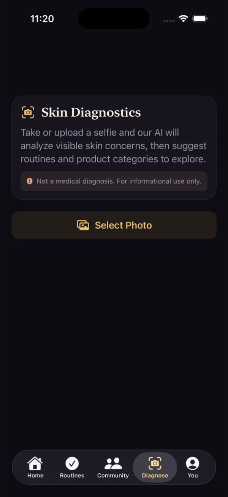
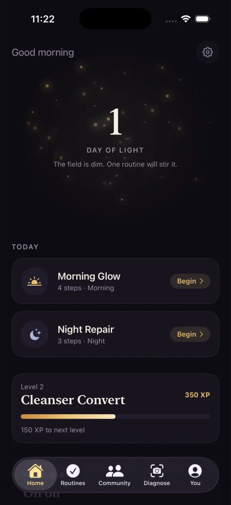
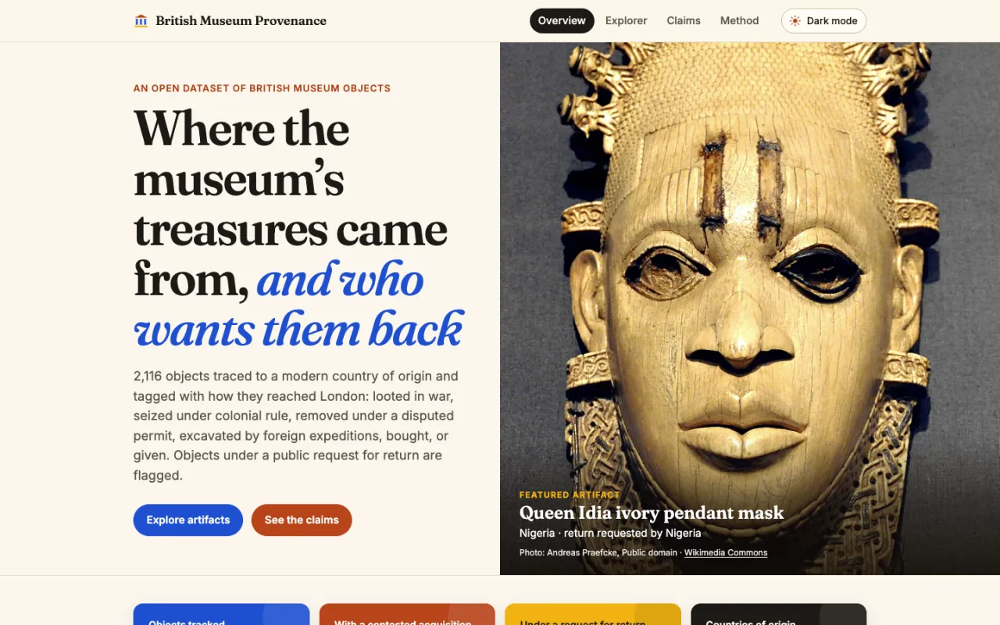
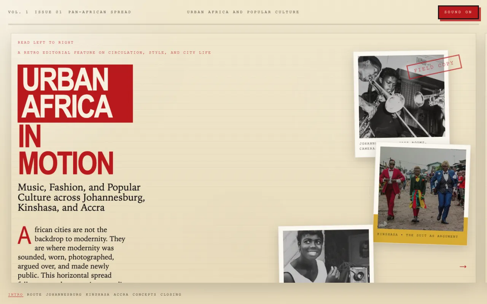
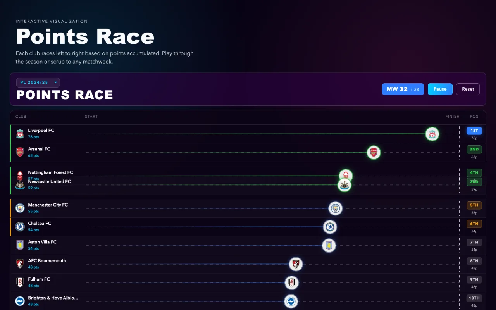
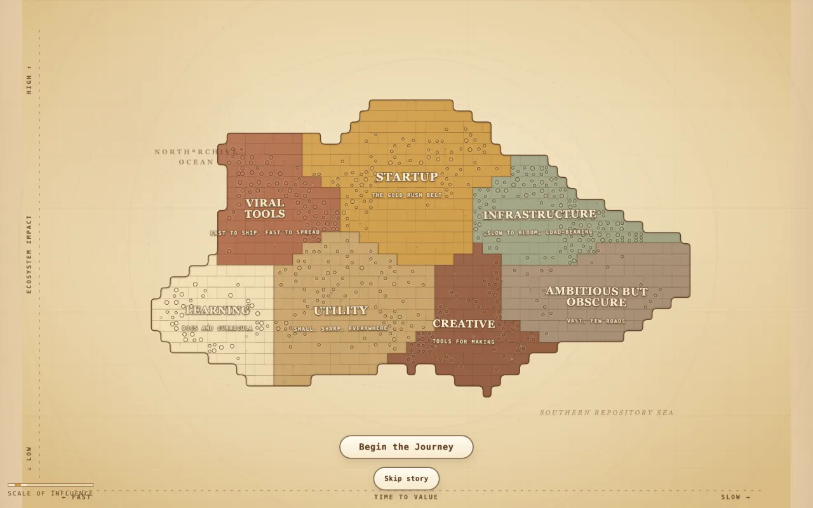

New · iOS app
Sera
A skincare companion for iOS. AI photo diagnostics, personalised routines, streaks, and a small social feed.


New · iOS app
A skincare companion for iOS. AI photo diagnostics, personalised routines, streaks, and a small social feed.

New · Data story
2,116 objects traced to where they came from and how they reached London: looted, seized, dug up, bought, or given.

iOS · Metal
A touch-driven particle field. Pinch to morph between a Fibonacci sphere and a drifting cloud.
Editorial web
A retro magazine spread on music, style, and print culture across Johannesburg, Kinshasa, and Accra.

AI · RAG
An assistant that answers international-student policy questions, with the sources it used.
3D · Data viz
The season table as a cityscape: each club is a tower that rises and falls with the points race.

React · Data viz
500 open source repos drawn as a vintage map, grouped by the value they create, not their star count.

May 2026 – Present
San Francisco, CA
iOS Software Engineering Intern · Achieve team
May 2025 – Present
Davidson, NC
Student Consultant
May – July 2025
Davidson, NC
Undergraduate Researcher · Algorithms for Learning in Physics Applications
Oct 2024 – Present
President
Apr 2025 – Present
Social Media & Marketing Lead
Aug 2025 – Present
Fellow · Special Events Committee
I’m from Harare, I study computer science at Davidson, and I like making software that feels good in your hand.
Lately that means native iOS in SwiftUI and Metal. I also make data stories and web experiences when a dataset or a class has something worth showing.
Davidson College
B.S. Computer Science, May 2028
Linear Algebra, Software Design, Game Development, Database Systems, Discrete Structures
Belk Merit Scholarship
Chidsey Leadership Fellow
Hack@Davidson 2025, “Best AI Chat Tool”
Bernard Society of Mathematics
Internships, projects, or a good idea. My inbox is open.